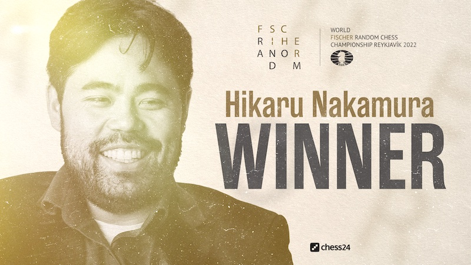
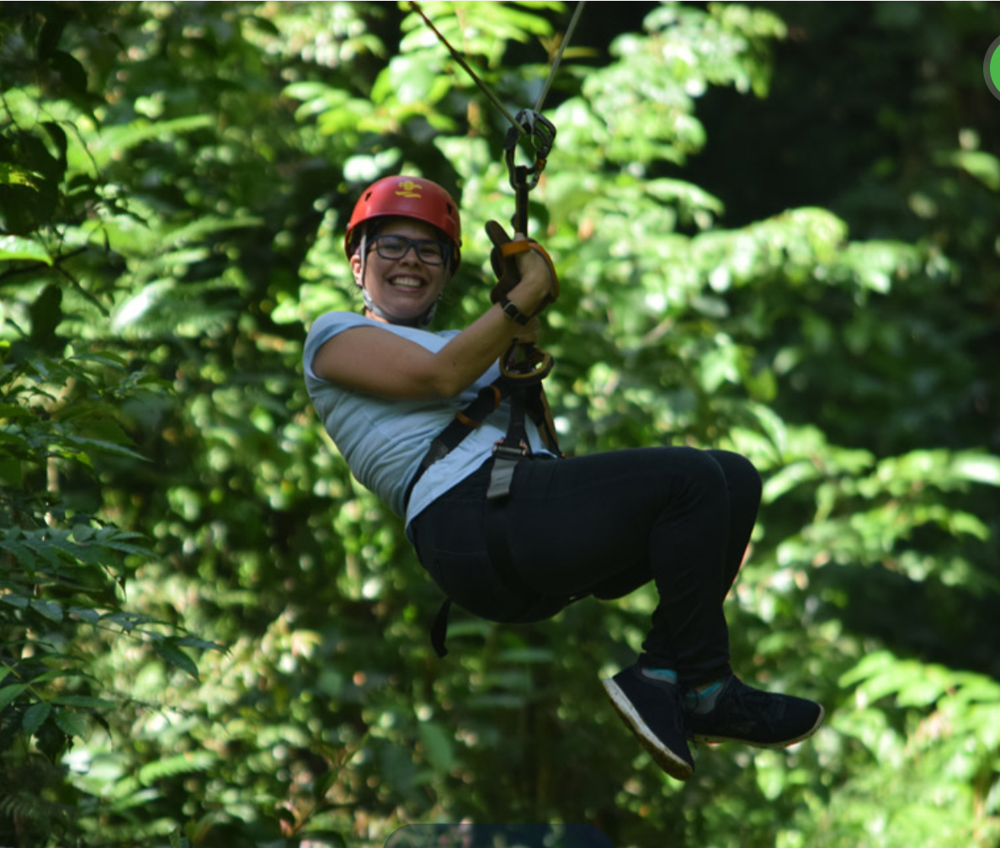
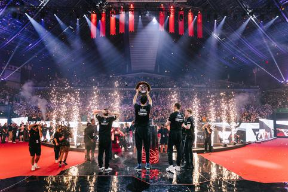

Nuevo Campeon Mundial
Hikaru Nakamura ha ganado el Mundial de Ajedrez960

Una partida de Armagedón decidió el Campeonato Mundial de Ajedrez960.
En la final, Hikaru Nakamura se enfrentó a Ian Nepomniachtchi y tras
un empate por 2-2 en el mini-match inicial, una partida Armagedón
decidió el título. Nakamura ganó con blancas para convertirse en el
nuevo campeón mundial de la categoría. En el match por el tercer
puesto, Magnus Carlsen venció a Nodirbek Abdusattorov. |
Turismo de montaña
Costa Rica se posiciona como un referente en el turismo ecológico en
la region

Realizar senderismo es una de las prácticas deportivas recreativas más
populares tanto para turistas nacionales como extranjeros. El país
está preparado para atraer a turistas de todo el mundo, en parte
gracias a las agencias de turismo que ofrecen paquetes de viajes
asequibles y accesibles para toda la población.
Mundial de DOTA 2
Tundra Esports se corona como campeón y se lleva casi US$8,5 millones

The International, el torneo más importante del eSport Dota 2, llegó a
su fin. El equipo ganador fue el europeo Tundra Esports, que derrotó
por 3 a 0 a la escuadra Team Secret. Tundra Esports, equipo basado en
Londres, Inglaterra, se llevó al bolsillo un premio de US$8.490.862,
además del título de campeón de la 11° edición del Ti. Tundra se
mantuvo invicto durante todos los playoffs, además de solo empatar o
ganar sus partidas en la fase de grupos.